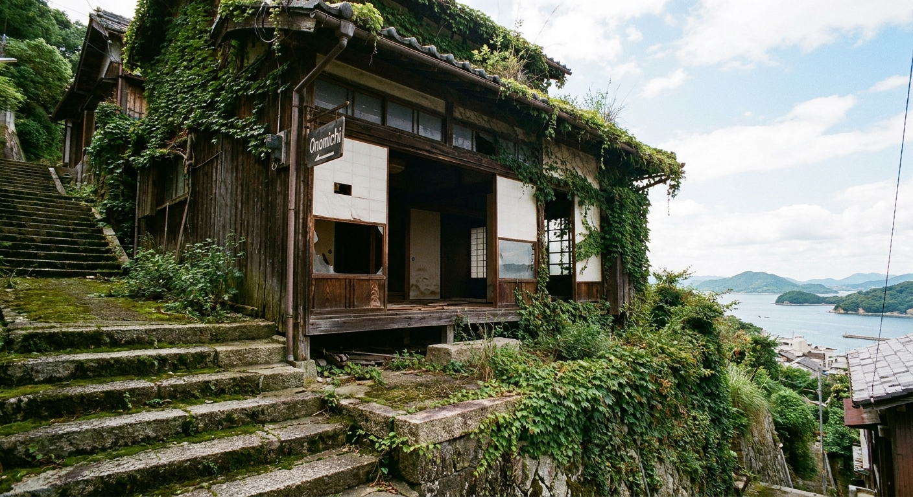
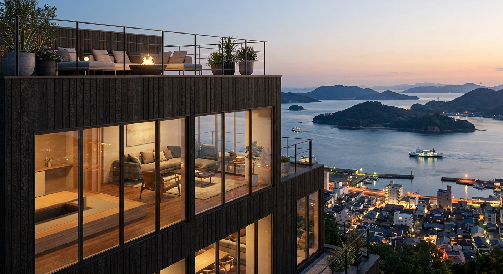
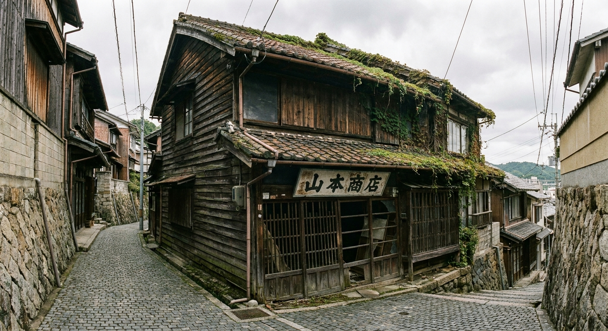
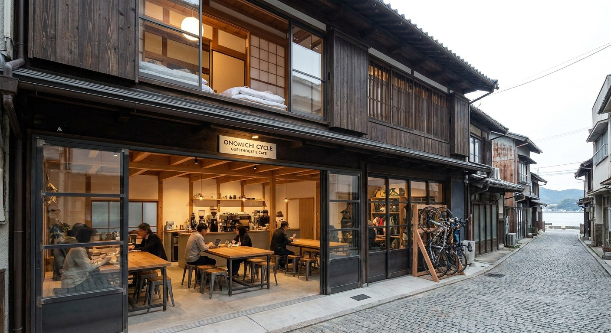
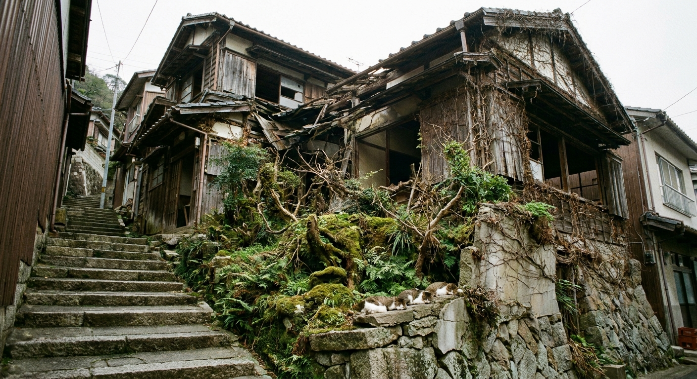
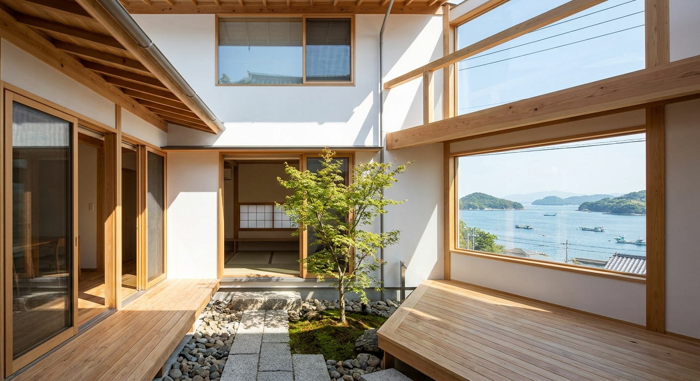
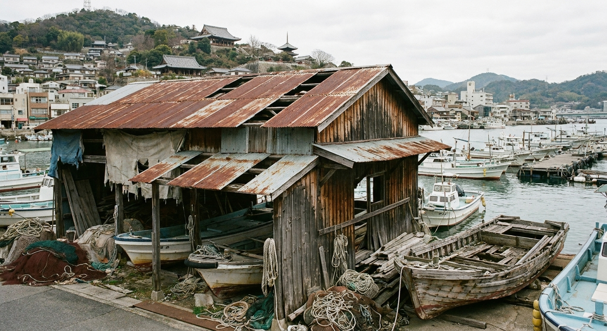
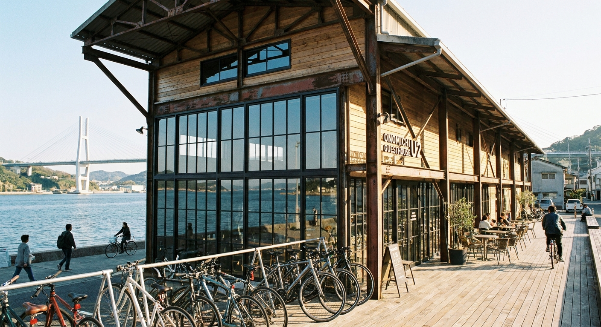

実際の物件 · 尾道坂の町家
AI リノベーション後Score Overview · 全物件スコア
立地・単価ポテンシャル・初期投資効率・稼働率・差別化要素の5項目を各20点満点で評価。しまなみ海道サイクリスト需要と外国人観光客が通年需要を支える。

現状写真
AI リノベ後イメージ
現状写真
AI リノベ後イメージ
現状写真
AI リノベ後イメージComparison · 全物件比較
| 物件 | スコア | 取得価格 | 総投資 | 年間純利益 | 回収期間 |
|---|---|---|---|---|---|
| 千光寺山裾 眺望町家 西土堂町 · 坂の絶景 · 2LDK |
86 | ¥380万 | ¥870〜1,120万 | ¥350万 | 4〜6年 |
| 港前 商家リノベ 土堂 · 格子造り · 3LDK |
79 | ¥280万 | ¥1,010〜1,330万 | ¥240〜340万 | 6〜8年 |
| 向島 海辺の古民家 向島町 · 渡船3分 · 4LDK |
72 | ¥200万 | ¥860〜1,150万 | ¥260万 | 7〜9年 |
| 栗原 石畳路地 長屋 栗原町 · 猫の細道 · 1LDK |
68 | ¥100万 | ¥510〜680万 | ¥166万 | 8〜10年 |
※ Airbnb ホストサービス料15%（ホスト全負担型）・清掃費・修繕積立を控除後の純利益。季節区分: 夏=7〜9月92日(稼働70%)、春秋=3〜6月・10〜11月91日(稼働55%)、冬=12〜2月182日(稼働30%)。実際の収益は市場環境・運営体制により異なります。
Why Onomichi · なぜ尾道なのか
Consultation · 無料相談
物件選定・リノベーション設計・Airbnb運用・SOLUNA SIPsパネル断熱施工まで一気通貫でサポートします。しまなみ海道の玄関口に、世界に誇る民泊を。まずは気軽にご相談を。
ありがとうございます。
24時間以内にご連絡します。